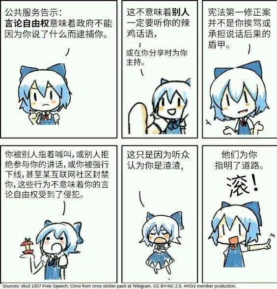

𝐀𝐬𝐡𝐥𝐞𝐲 𝐁𝐥𝐨𝐜𝐤🍥🌹🇹🇼🇪🇺🏳️⚧️
@bolckAshley
沒有人說別人發表的意見都是在「對抗、詆毀、胡言亂語」，某些政黨與個人倘若在面對他人/他黨的「認為應該把問題聚焦於解決問題本身」認為是在說他們的意見都是在「胡言亂語」，我覺得是沒有任何辦法的
順帶一提，民主制度不代表對極端主義的無底線包容，然後關於言論自由的定義在這：

時雨☭🚩🏴☠️🇵🇸🇺🇦🇻🇪🏳️🌈
@shigure07288
我没意见，不过如果有人害怕被批评，那我建议还是别竞选了，因为竞选就是要找到对方的政策漏洞，提出更好的解决方案来争取民意支持。如果连这个也无法理性看待，认为别人发表言论都是在“诋毁、对抗、胡言乱语、无谓的争论”，只能说明这个人不适合民主制度。😋 https://t.co/HV50eQsu6n